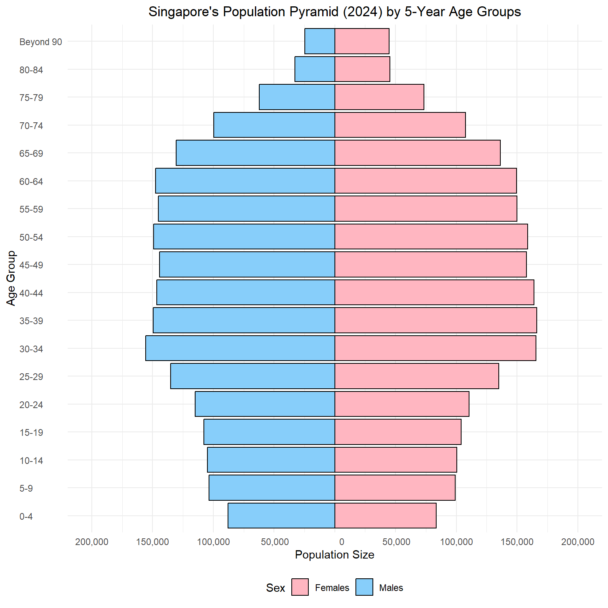
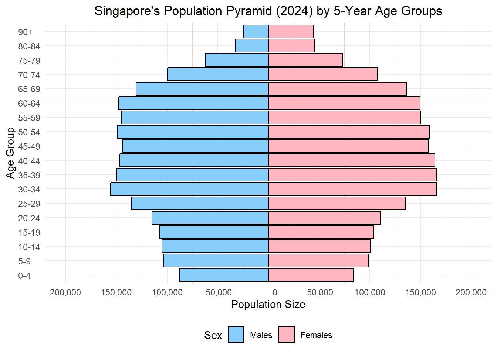
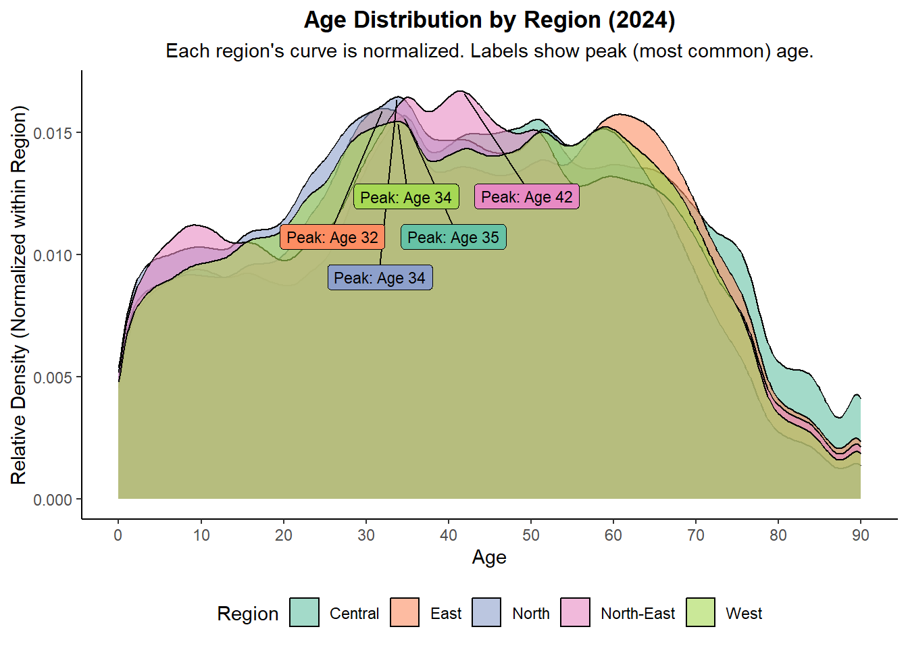
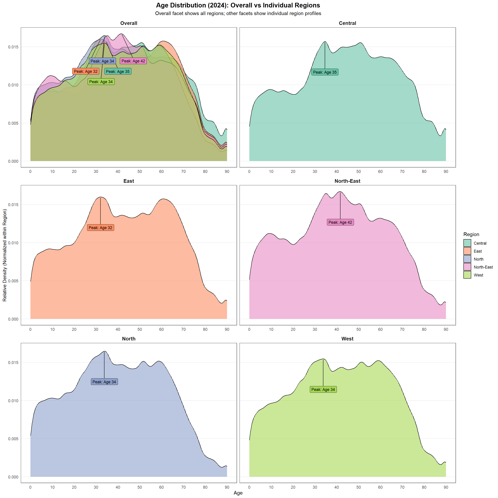
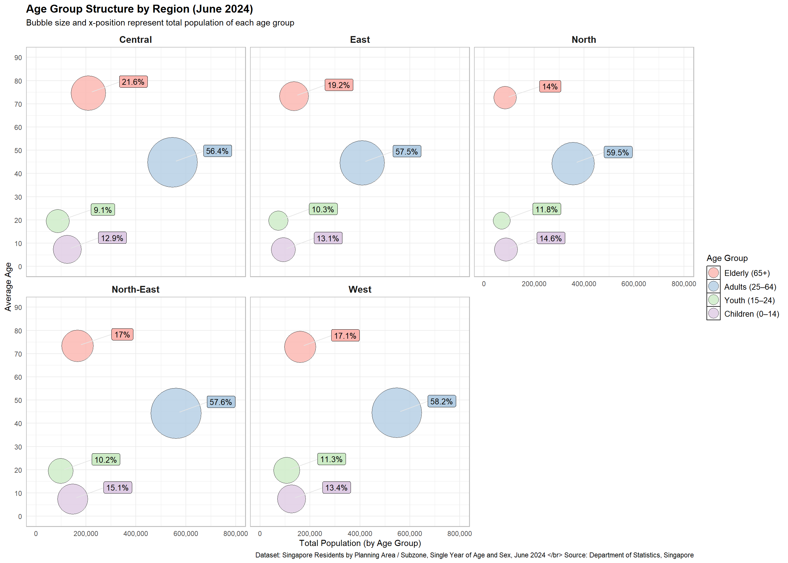

pacman::p_load(tidyverse, ggthemes, gghighlight, ggrepel, patchwork, sf, tmap, knitr, scales, colorspaces, ggh4x)Take Home Exercise 1
Singapore in 2024: A Visual Guide to our Population Landscape.
1.0 Introduction
Singapore’s population structure reveals a dynamic interplay between urban development, ageing, and youth distribution. Let’s explore the demographic breakdown of 2024 through interactive charts.
2.0 Loading R Packages and Dataset
2.1 Libraries Required
The following R packages were used via pacman::p_load() to support data wrangling, visualization, and mapping for Singapore’s 2024 population data.
| Package | Description | Official Link |
|---|---|---|
tidyverse |
A collection of R packages (including ggplot2, dplyr, readr, etc.) for data manipulation, exploration, and visualization. It forms the foundation of modern R workflows. |
tidyverse.org |
ggthemes |
Provides additional themes, color palettes, and formatting options for ggplot2 charts, such as Economist, Wall Street Journal, and Tufte styles. |
CRAN – ggthemes |
gghighlight |
Simplifies highlighting specific data in ggplot2 visualizations without manual filtering. Great for emphasizing trends. |
GitHub – gghighlight |
patchwork |
Enables easy composition of multiple ggplot2 plots into complex layouts. Very useful for dashboards or comparative plots. |
patchwork.data-imaginist.com |
sf |
Provides tools for handling and analyzing geospatial vector data using a data.frame-like structure. Compatible with the tidyverse. |
R-Spatial – sf |
tmap |
A flexible mapping package for creating static and interactive thematic maps from spatial data, built to work well with sf. |
r-tmap.github.io |
2.1 Loading the dataset
The dataset used is “Singapore Residents by Planning Area / Subzone, Single Year of Age and Sex, June 2024”, it is shared by the Department of Statistics, Singapore (DOS).
We begin by loading the required libraries and reading the dataset using readr::read_csv() from the tidyverse collection:
df <- read_csv("data/respopagesex2024.csv")This dataset provides a snapshot of the resident population in Singapore as of June 2024, broken down by planning areas, subzones, age, and sex.
2.1.1 Column Descriptions
| Column | Description |
|---|---|
PA |
Planning Area – As defined by URA Master Plan 2019 |
SZ |
Subzone – Subdivision within a planning area |
Age |
Single Year of Age – From 0 to 100+ |
Sex |
Sex – “Males” or “Females” |
Pop |
Resident Count – Rounded to the nearest 10 |
Time |
Reference Period |
2.1.2 Notes from Source
- Residents who have been away from Singapore for more than 12 continuous months are excluded.
- All population counts are rounded to the nearest 10, which may result in totals that do not sum exactly.
- The reference period for this dataset is June 2024.
2.1.3 Understanding the data
Before we proceed with visualisation, a few inspection and validation of the dataset will be performed.
# A tibble: 6 × 6
PA SZ Age Sex Pop Time
<chr> <chr> <chr> <chr> <dbl> <dbl>
1 Ang Mo Kio Ang Mo Kio Town Centre 0 Males 10 2024
2 Ang Mo Kio Ang Mo Kio Town Centre 0 Females 10 2024
3 Ang Mo Kio Ang Mo Kio Town Centre 1 Males 10 2024
4 Ang Mo Kio Ang Mo Kio Town Centre 1 Females 10 2024
5 Ang Mo Kio Ang Mo Kio Town Centre 2 Males 10 2024
6 Ang Mo Kio Ang Mo Kio Town Centre 2 Females 10 2024Rows: 60,424
Columns: 6
$ PA <chr> "Ang Mo Kio", "Ang Mo Kio", "Ang Mo Kio", "Ang Mo Kio", "Ang Mo K…
$ SZ <chr> "Ang Mo Kio Town Centre", "Ang Mo Kio Town Centre", "Ang Mo Kio T…
$ Age <chr> "0", "0", "1", "1", "2", "2", "3", "3", "4", "4", "5", "5", "6", …
$ Sex <chr> "Males", "Females", "Males", "Females", "Males", "Females", "Male…
$ Pop <dbl> 10, 10, 10, 10, 10, 10, 10, 10, 30, 10, 20, 10, 20, 30, 30, 10, 3…
$ Time <dbl> 2024, 2024, 2024, 2024, 2024, 2024, 2024, 2024, 2024, 2024, 2024,…There are 60,424 rows noted with the 6 columns as stated in the source notes stated in earlier section 2.1.
However the column Age has been loaded as a character type instead of double (numeric) variable as it includes a categorical label for the age group 90+ as “90_and_Over”. This could be handled by converting this label into “90”together with an additional categorical label for this project.
df <- read_csv("data/respopagesex2024.csv",
col_types = cols(
Age = col_character()
)
) %>%
rename(
Planning_Area = PA,
Subzone = SZ,
Population = Pop
) %>%
mutate(
Age_Num = if_else(Age == "90_and_Over", 90L, as.integer(Age)),
AgeGroup = case_when(
Age_Num <= 14 ~ "Children (0–14)",
Age_Num <= 24 ~ "Youth (15–24)",
Age_Num <= 64 ~ "Adults (25–64)",
TRUE ~ "Elderly (65+)"
),
AgeGroup = factor(
AgeGroup,
levels = c("Children (0–14)", "Youth (15–24)", "Adults (25–64)", "Elderly (65+)")
),
Region = case_when(
Planning_Area %in% c(
"Ang Mo Kio", "Hougang", "Punggol", "Sengkang", "Serangoon",
"Seletar", "North-Eastern Islands"
) ~ "North-East",
Planning_Area %in% c(
"Bedok", "Pasir Ris", "Tampines", "Changi", "Changi Bay", "Paya Lebar"
) ~ "East",
Planning_Area %in% c(
"Bishan", "Bukit Merah", "Bukit Timah", "Downtown Core", "Geylang", "Kallang",
"Marine Parade", "Museum", "Newton", "Novena", "Orchard", "Outram", "Queenstown",
"River Valley", "Rochor", "Singapore River", "Southern Islands", "Straits View",
"Tanglin", "Toa Payoh"
) ~ "Central",
Planning_Area %in% c(
"Boon Lay", "Bukit Batok", "Bukit Panjang", "Choa Chu Kang", "Clementi", "Jurong East",
"Jurong West", "Pioneer", "Tengah", "Tuas", "Western Islands", "Western Water Catchment"
) ~ "West",
Planning_Area %in% c(
"Lim Chu Kang", "Mandai", "Sembawang", "Simpang", "Sungei Kadut", "Woodlands",
"Yishun", "Central Water Catchment"
) ~ "North",
)
)# A tibble: 6 × 9
Planning_Area Subzone Age Sex Population Time Age_Num AgeGroup Region
<chr> <chr> <chr> <chr> <dbl> <dbl> <int> <fct> <chr>
1 Ang Mo Kio Ang Mo Kio… 0 Males 10 2024 0 Childre… North…
2 Ang Mo Kio Ang Mo Kio… 0 Fema… 10 2024 0 Childre… North…
3 Ang Mo Kio Ang Mo Kio… 1 Males 10 2024 1 Childre… North…
4 Ang Mo Kio Ang Mo Kio… 1 Fema… 10 2024 1 Childre… North…
5 Ang Mo Kio Ang Mo Kio… 2 Males 10 2024 2 Childre… North…
6 Ang Mo Kio Ang Mo Kio… 2 Fema… 10 2024 2 Childre… North…Rows: 60,424
Columns: 9
$ Planning_Area <chr> "Ang Mo Kio", "Ang Mo Kio", "Ang Mo Kio", "Ang Mo Kio", …
$ Subzone <chr> "Ang Mo Kio Town Centre", "Ang Mo Kio Town Centre", "Ang…
$ Age <chr> "0", "0", "1", "1", "2", "2", "3", "3", "4", "4", "5", "…
$ Sex <chr> "Males", "Females", "Males", "Females", "Males", "Female…
$ Population <dbl> 10, 10, 10, 10, 10, 10, 10, 10, 30, 10, 20, 10, 20, 30, …
$ Time <dbl> 2024, 2024, 2024, 2024, 2024, 2024, 2024, 2024, 2024, 20…
$ Age_Num <int> 0, 0, 1, 1, 2, 2, 3, 3, 4, 4, 5, 5, 6, 6, 7, 7, 8, 8, 9,…
$ AgeGroup <fct> Children (0–14), Children (0–14), Children (0–14), Child…
$ Region <chr> "North-East", "North-East", "North-East", "North-East", …3.0 Visualisations
3.1 Population Pyramid
# Find the maximum age
max_age <- max(df$Age_Num)
# Prepare the data for ggplot2
plot_df <- df %>%
# Group ages by 5-year intervals
mutate(AgeGroup = cut(Age_Num,
breaks = if (max_age > 90) {
c(seq(0, 85, by = 5), 90, max_age + 1)
} else {
c(seq(0, 85, by = 5), max_age + 1)
},
right = FALSE,
labels = if (max_age > 90) {
c(
paste0(seq(0, 80, by = 5), "-", seq(4, 84, by = 5)),
"90+"
)
} else {
c(
paste0(seq(0, 80, by = 5), "-", seq(4, 84, by = 5)),
"Beyond 90"
)
})) %>%
group_by(AgeGroup, Sex) %>%
summarise(Population = sum(Population)) %>%
ungroup() %>%
mutate(Population = ifelse(Sex == "Males", -Population, Population)) %>%
mutate(PopulationAbs = abs(Population)) # Create absolute value for labels
# Create the population pyramid using ggplot2
ggplot(plot_df, aes(x = AgeGroup, y = Population, fill = Sex)) +
geom_bar(stat = "identity", width = 0.90, color = "black") +
coord_flip() +
labs(
title = "Singapore's Population Pyramid (2024) by 5-Year Age Groups",
x = "Age Group",
y = "Population Size"
) +
scale_y_continuous(
labels = function(x) format(abs(x), big.mark = ",", scientific = FALSE),
limits = c(-200000, 200000),
breaks = seq(-200000, 200000, by = 50000)
) +
scale_fill_manual(values = c("Females" = "#FFB6C1", "Males" = "#87CEFA")) +
theme_minimal() +
theme(
plot.title = element_text(hjust = 0.5),
legend.position = "bottom",
axis.text.y = element_text(hjust = 0)
)
# Find the maximum age
max_age <- max(df$Age_Num, na.rm = TRUE)
# Prepare the data
plot_df <- df %>%
mutate(
AgeGroup = cut(
Age_Num,
breaks = if (max_age > 90) {
c(seq(0, 85, by = 5), 90, max_age + 1)
} else {
c(seq(0, 85, by = 5), max_age + 1)
},
right = FALSE,
labels = if (max_age > 90) {
c(paste0(seq(0, 80, by = 5), "-", seq(4, 84, by = 5)), "90+")
} else {
c(paste0(seq(0, 80, by = 5), "-", seq(4, 84, by = 5)), "90+")
}
)
) %>%
group_by(AgeGroup, Sex) %>%
summarise(Population = sum(Population), .groups = "drop") %>%
mutate(
Population = ifelse(Sex == "Males", -Population, Population),
PopulationAbs = abs(Population)
)
# Plot
ggplot(plot_df, aes(x = AgeGroup, y = Population, fill = Sex)) +
geom_bar(stat = "identity", width = 0.90, color = "black") +
geom_text_repel(
aes(label = format(PopulationAbs, big.mark = ",")),
size = 3,
direction = "y",
nudge_y = 15000 * sign(plot_df$Population),
hjust = 0.5,
segment.color = NA,
show.legend = FALSE
) +
coord_flip() +
labs(
title = "Singapore's Population Pyramid (2024) by 5-Year Age Groups",
x = "Age Group",
y = "Population Size"
) +
scale_y_continuous(
labels = function(x) format(abs(x), big.mark = ",", scientific = FALSE),
limits = c(-200000, 200000),
breaks = seq(-200000, 200000, by = 50000),
minor_breaks = seq(-200000, 200000, by = 25000)
) +
scale_fill_manual(
values = c("Males" = "#87CEFA", "Females" = "#FFB6C1"),
breaks = c("Males", "Females")
) +
theme_minimal() +
theme(
plot.title = element_text(hjust = 0.5),
legend.position = "bottom",
axis.text.y = element_text(hjust = 0),
panel.grid.minor.x = element_line(color = "grey85", size = 0.3)
)
3.x Density plot of Population
# Step 1: Prepare the expanded dataset (same as before)
density_df <- df %>%
filter(!is.na(Region), !is.na(Age_Num)) %>%
group_by(Region, Age_Num) %>%
summarise(Population = sum(Population), .groups = "drop") %>%
uncount(weights = Population)
# Step 2: Calculate density peaks using base R's density()
density_peaks <- density_df %>%
group_by(Region) %>%
summarise(
density_obj = list(density(Age_Num, kernel = "gaussian"))
) %>%
rowwise() %>%
mutate(
peak_x = density_obj$x[which.max(density_obj$y)],
peak_y = max(density_obj$y),
label = paste0("Peak: Age ", round(peak_x))
) %>%
ungroup()# Plot
ggplot(density_df, aes(x = Age_Num, fill = Region)) +
geom_density(alpha = 0.6, color = "black") +
ggrepel::geom_label_repel(
data = density_peaks,
aes(x = peak_x, y = peak_y, label = label, fill = Region),
color = "black",
size = 3,
box.padding = 0.3,
point.padding = 0.2,
max.overlaps = 10,
show.legend = FALSE,
nudge_y = -0.005
) +
labs(
title = "Age Distribution by Region (2024)",
subtitle = "Each region's curve is normalized. Labels show peak (most common) age.",
x = "Age",
y = "Relative Density (Normalized within Region)",
fill = "Region"
) +
scale_x_continuous(breaks = seq(0, 90, 10)) +
scale_fill_brewer(palette = "Set2") +
theme_classic() +
theme(
plot.title = element_text(face = "bold", hjust = 0.5),
plot.subtitle = element_text(hjust = 0.5),
legend.position = "bottom"
)
# Step 1: Create faceted dataset
density_df_facet <- df %>%
filter(!is.na(Region), !is.na(Age_Num)) %>%
mutate(RegionFacet = Region) %>% # preserve Region for per-facet filtering
bind_rows(
df %>%
filter(!is.na(Age_Num)) %>%
mutate(Region = Region, RegionFacet = "Overall") # keep Region for color, "Overall" for facet
) %>%
group_by(RegionFacet, Region, Age_Num) %>%
summarise(Population = sum(Population), .groups = "drop") %>%
uncount(weights = Population)# Step 2: Compute density peaks for each region/facet combination
density_peaks_facet <- density_df_facet %>%
group_by(RegionFacet, Region) %>%
summarise(
density_obj = list(density(Age_Num, kernel = "gaussian")),
.groups = "drop"
) %>%
rowwise() %>%
mutate(
peak_x = density_obj$x[which.max(density_obj$y)],
peak_y = max(density_obj$y),
label = paste0("Peak: Age ", round(peak_x))
) %>%
ungroup()density_df_facet$RegionFacet <- factor(
density_df_facet$RegionFacet,
levels = c("Overall", "Central", "East", "North-East", "North", "West")
)
density_peaks_facet$RegionFacet <- factor(
density_peaks_facet$RegionFacet,
levels = c("Overall", "Central", "East", "North-East", "North", "West")
)
ggplot(density_df_facet, aes(x = Age_Num, fill = Region)) +
geom_density(alpha = 0.6, color = "black") +
ggrepel::geom_label_repel(
data = density_peaks_facet,
aes(x = peak_x, y = peak_y, label = label, fill = Region),
color = "black",
size = 3,
box.padding = 0.3,
point.padding = 0.2,
nudge_y = -0.004,
max.overlaps = 20,
show.legend = FALSE
) +
labs(
title = "Age Distribution (2024): Overall vs Individual Regions",
subtitle = "Overall facet shows all regions; other facets show individual region profiles",
x = "Age",
y = "Relative Density (Normalized within Region)",
fill = "Region"
) +
scale_x_continuous(breaks = seq(0, 90, 10)) +
scale_fill_brewer(palette = "Set2") +
facet_wrap(~ RegionFacet, ncol = 2, scales ="fixed", axes ="all_x") +
theme_minimal() +
theme(
plot.title = element_text(face = "bold", hjust = 0.5, size = 14),
plot.subtitle = element_text(hjust = 0.5),
strip.text = element_text(face = "bold", size = 11),
legend.position = "right",
panel.grid.major.y = element_line(color = "grey85", size = 0.3),
panel.grid.minor = element_blank(),
panel.grid.major.x = element_blank(),
panel.border = element_rect(color = "grey50", fill = NA, size = 0.8),
axis.text.y = element_text(size = 9),
axis.title.y = element_text(size = 10)
)
3.x Bubble plot of Regions
Creating the region summary dataset
region_age_summary <- df %>%
filter(!is.na(Region)) %>%
group_by(Region) %>%
mutate(TotalRegionPop = sum(Population)) %>%
group_by(Region, AgeGroup) %>%
summarise(
Total_Pop = sum(Population),
Avg_Age = weighted.mean(Age_Num, w = Population),
Pct_Pop = sum(Population) / first(TotalRegionPop) * 100,
.groups = "drop"
) %>%
mutate(
AgeGroup = factor(
AgeGroup,
levels = c("Elderly (65+)", "Adults (25–64)", "Youth (15–24)", "Children (0–14)")
),
label = paste0(round(Pct_Pop, 1), "%")
)# Plot
ggplot(region_age_summary, aes(x = Total_Pop, y = Avg_Age, size = Total_Pop, fill = AgeGroup)) +
geom_point(shape = 21, color = "black", alpha = 0.8) +
scale_x_continuous(
labels = scales::label_comma(),
limits = c(0, 800000),
breaks = seq(0, 800000, by = 200000)
) +
scale_y_continuous(
limits = c(0, 90),
breaks = seq(0, 90, by = 10)
) +
scale_size_continuous(range = c(10, 30), guide = "none") +
scale_fill_brewer(palette = "Pastel1") +
guides(
fill = guide_legend(override.aes = list(size = 6)) # Enlarge legend bubbles
) +
facet_wrap(~ Region) +
labs(
title = "Age Group Structure by Region (June 2024)",
subtitle = "Bubble size and x-position represent total population of each age group",
x = "Total Population (by Age Group)",
y = "Average Age",
fill = "Age Group",
caption = "Dataset: Singapore Residents by Planning Area / Subzone, Single Year of Age and Sex, June 2024 </br> Source: Department of Statistics, Singapore"
) +
geom_label_repel(
aes(label = label),
size = 3.5,
nudge_x = 180000,
nudge_y = 5,
show.legend = FALSE,
segment.color = "grey90",
box.padding = 0.35,
point.padding = 0.5,
min.segment.length = 0
) +
theme_minimal() +
theme(
strip.text = element_text(size = 12, face = "bold"),
plot.title = element_text(size = 14, face = "bold"),
legend.title = element_text(size = 11),
legend.text = element_text(size = 10),
legend.key = element_rect(fill = NA),
panel.border = element_rect(color = "grey", fill = NA, size = 0.8)
)
3.3
# Step 1: Aggregate by Planning Area and Age Group in Central region
waffle_data <- df %>%
filter(Region == "Central") %>%
group_by(Planning_Area, AgeGroup) %>%
summarise(Pop = sum(Population, na.rm = TRUE), .groups = "drop") %>%
group_by(Planning_Area) %>%
mutate(
total = sum(Pop),
pct = round(Pop / total * 100), # ensure it's numeric whole number
category = AgeGroup
) %>%
filter(pct > 0) %>% # eliminate 0s to prevent uncount error
ungroup() %>%
select(Planning_Area, category, pct)
# Step 2: Expand to grid tiles (10x10)
waffle_expanded <- waffle_data %>%
uncount(pct) %>%
group_by(Planning_Area, category) %>%
mutate(
id = row_number() - 1,
x = id %% 10,
y = id %/% 10
) %>%
ungroup()
# Step 3: Plot waffle chart
ggplot(waffle_expanded, aes(x = x, y = y, fill = category)) +
geom_tile(color = "white", size = 0.5) +
coord_equal() +
facet_wrap(~ Planning_Area, ncol = 2) +
scale_fill_brewer(palette = "Set2") +
labs(
title = "Age Group Composition in Central Region (Waffle Charts)",
subtitle = "Each square represents ~1% of the Planning Area population",
fill = "Age Group",
caption = "Source: Department of Statistics, Singapore"
) +
theme_minimal() +
theme(
axis.text = element_blank(),
axis.title = element_blank(),
axis.ticks = element_blank(),
panel.grid = element_blank(),
plot.title = element_text(hjust = 0.5, face = "bold"),
strip.text = element_text(size = 10, face = "bold"),
legend.position = "bottom"
)